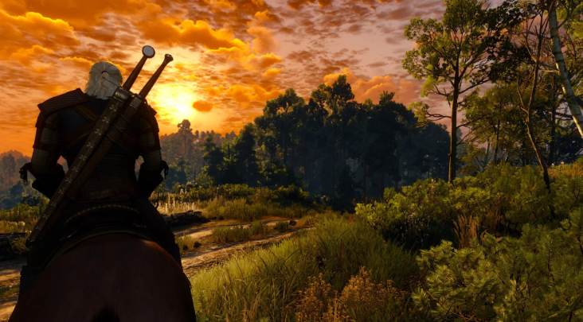

19 мая 2015 года индустрия гейминга изменилась навсегда, ведь именно в этот день состоялся релиз игры «Ведьмак 3: Дикая Охота».
Продолжение полюбившейся всем истории Геральта из Ривии ворвалось на игровую сцену с размахом, который сложно было игнорировать: захватывающий сюжет, по-настоящему живой мир, сложные моральные выборы — всё это моментально сделало игру культовой.
Прошло 10 лет. CD Projekt RED давно работает над другими проектами, технологии шагнули вперёд, а игроки — к новым увлечениям. Но стоит только упомянуть «третьего Ведьмака», как в глазах геймеров загорается узнаваемый огонёк.
